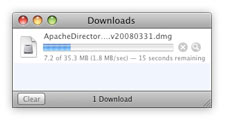
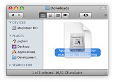

Apache Directory Studio
Downloads
Documentation
Resources
Support
Community
About Apache
Downloads for macOS
[if-any logo]
[end]
We suggest the following mirror site for your download:
macOS 64 bit
|
|
[preferred][...]/ApacheDirectoryStudio-2.0.0.v20210717-M17-macosx.cocoa.x86_64.dmg | [ASC] [SHA256] [SHA512] |
We encourage you to verify the integrity of the downloaded file using:
- the ASC file (OpenPGP compatible signature) with the KEYS file (code signing keys used to sign the product)
- the SHA256 or SHA512 files (checksum).
Installation
 |
 | Click on the link above to download Apache Directory Studio for macOS. | |
 |
 | The download appeares in the Downloads folder in Finder. Double-click on the disk image to open it. | |
 |
Drag-and-drop the Apache Directory Studio application on the Applications folder to install it. |
Requirements
Apache Directory Studio requires at least:
- macOS version 10.10 (Yosemite) or later.
- Java 11 or later, we recommend AdoptOpenJDK.
Verify the integrity of the file
The PGP signatures can be verified using PGP or GPG. First download the KEYS as well as the asc signature file for the relevant distribution. Then verify the signatures using:
$ pgpk -a KEYS $ gpgv ApacheDirectoryStudio-2.0.0.v20210717-M17-macosx.cocoa.x86_64.dmg.asc
$ pgp -ka KEYS $ gpg ApacheDirectoryStudio-2.0.0.v20210717-M17-macosx.cocoa.x86_64.dmg.asc ApacheDirectoryStudio-2.0.0.v20210717-M17-macosx.cocoa.x86_64.dmg
$ gpg --import KEYS $ gpg --verify ApacheDirectoryStudio-2.0.0.v20210717-M17-macosx.cocoa.x86_64.dmg.asc ApacheDirectoryStudio-2.0.0.v20210717-M17-macosx.cocoa.x86_64.dmg
Alternatively, you can verify the checksums of the files (see the How to verify downloaded files page).